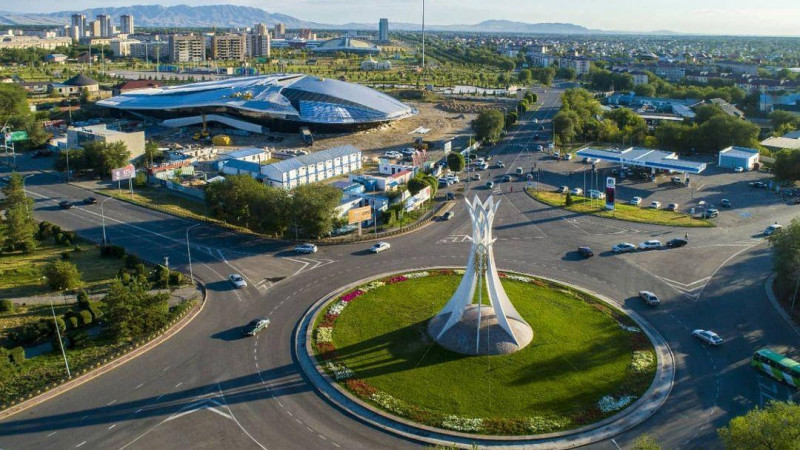

known as Taldy-Kurgan until 1993, is the capital (called an administrative center) of Zhetysu Region, Kazakhstan. According to the 2010 Kazakh Census Results, the population is 143,407. The town was founded in the 19th century as the village of Gavrilovka and developed into the present city on the same site. The town grew slowly in its early years. After the completion of the railway connection many Russian farmers moved to the area of the town. Russians are the second-largest ethnic group after the Kazakhs among the 70 nationalities living in Taldykorgan. A total of 143,000 people live in the city.